Deploy decisions to DMN Developer Sandbox
In early 2021, Red Hat introduced the Developer Sandbox for Red Hat OpenShift. On top of that, we built the DMN Developer Sandbox, which makes deploying decision services easy for developers, and this is now live at dmn.new as part of the Kogito Tooling 0.12.0 release.
Let’s check out how the DMN Developer Sandbox works in this post!

If you are not familiar with the Developer Sandbox for Red Hat OpenShift, here is a quote from the official website that pretty much sums up all its capabilities:
The sandbox provides you with a private OpenShift environment in a shared, multi-tenant OpenShift cluster that is pre-configured with a set of developer tools. You can easily create containers from your source code or Dockerfile, build new applications using the samples and stacks provided, add services such as databases from our templates catalog, deploy Helm charts, and much more. Discover the rich capabilities of the full developer experience on OpenShift with the sandbox.
In addition, I recommend the KIE Live #35, which shows how to stream decisions using both the Developer Sandbox for Red Hat OpenShift and the Red Hat OpenShift Streams for Apache Kafka.
Now, let’s talk about the DMN Developer Sandbox.
Simply put, the DMN Developer Sandbox allows you to deploy decision models to the Developer Sandbox for Red Hat OpenShift.
Here is what happens behind the scenes when you deploy your DMN:
- We prepared a base docker image containing an empty Kogito project, a form web app to be loaded up, and tools to build everything up;
- All resources associated with the deployment are created for you in your instance, including ImageStream, Service, Route, BuildConfig, Build, and Deployment.
- The DMN that is being deployed is placed inside the Kogito project that is in the base image and this project is built as part of a Dockerfile;
- Once the project is built up, the generated Quarkus app is started up and exposed through the newly created Route in your instance.
Important: The DMN Developer Sandbox is intended to be used during development, so users should not use the deployed DMN services in production or for any type of business-critical workloads.
Step by step: How to deploy your decision model
1-) Go to dmn.new
You will notice that the toolbar has slightly changed.
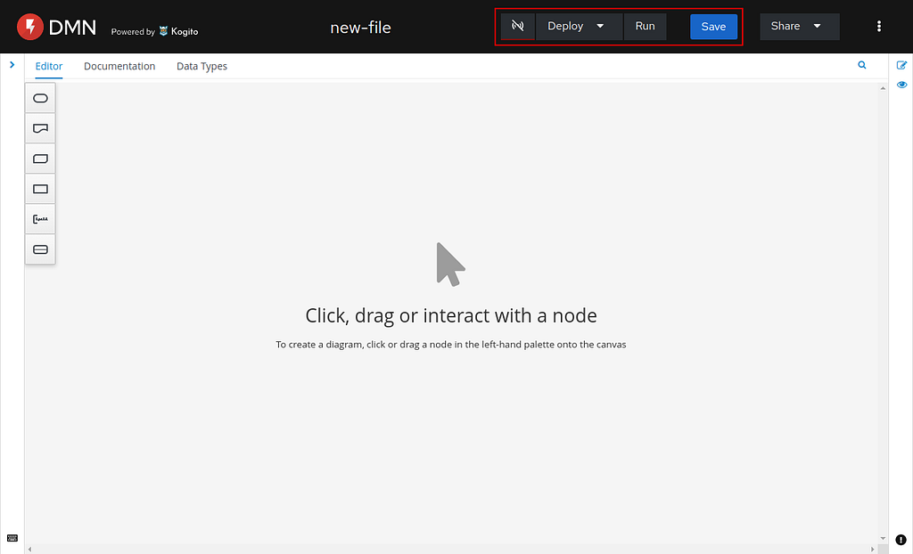
In the highlighted red rectangle, you will find the KIE Tooling Extended Services status icon, the DMN Developer Sandbox dropdown (as Deploy), the DMN Runner button (as Run), and the Save button.
Check out this post to learn more about the DMN Runner.
2-) Install the KIE Tooling Extended Services
Since both DMN Runner and DMN Developer Sandbox features depend on having the KIE Tooling Extended Services running, you need to install it. To do so, click on the Deploy dropdown or on the Run button, and follow the steps that will be presented to you.
Once the KIE Tooling Extended Services is running, the status icon will turn green.
Note: You need to install the 0.12.0 version of the KIE Tooling Extended Services even if you are using an older version.
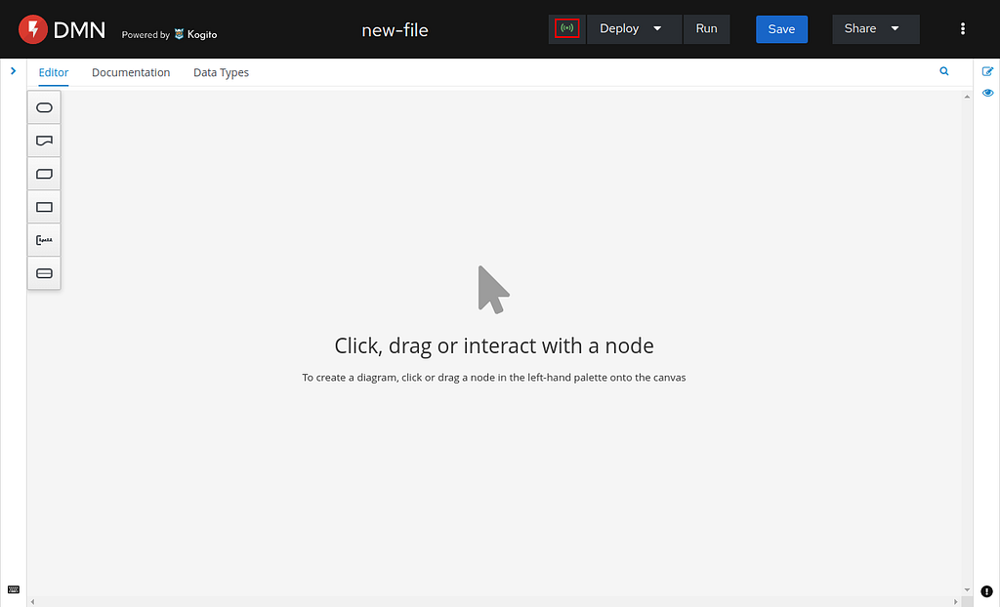
3-) Setup your Developer Sandbox information
Click on the Deploy dropdown and then Setup.
Since this is the first time we are setting this up, let’s use the guided wizard instead. In the popup, click on the Configure through the guided wizard instead link.
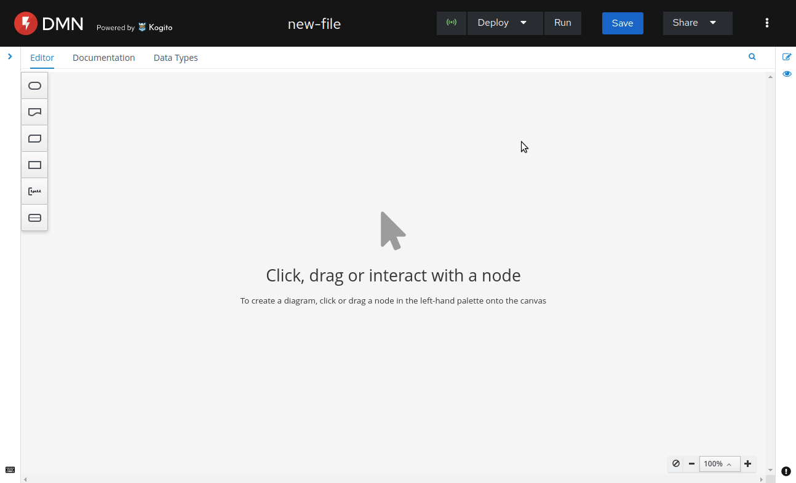
In the first step of the wizard, you need to set up your Developer Sandbox for Red Hat OpenShift instance before proceeding with the rest of the steps. As you will be instructed in the wizard, access the Get Started page and create your instance.
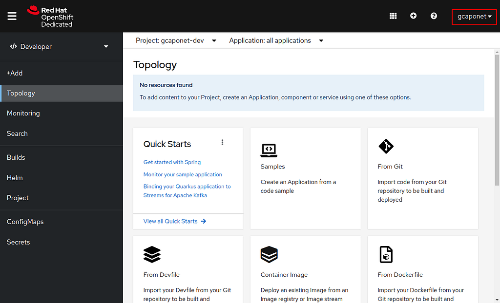
Once your instance is ready, you can pick up your username in the upper-right corner and place it in the first step of the wizard. This information is necessary for locating your namespaces (or projects).
Note: You receive two namespaces (or projects) when you create your instance, namely username-dev and username-stage. However, we always use the username-dev for the deployments on this first release of the DMN Dev Sandbox.
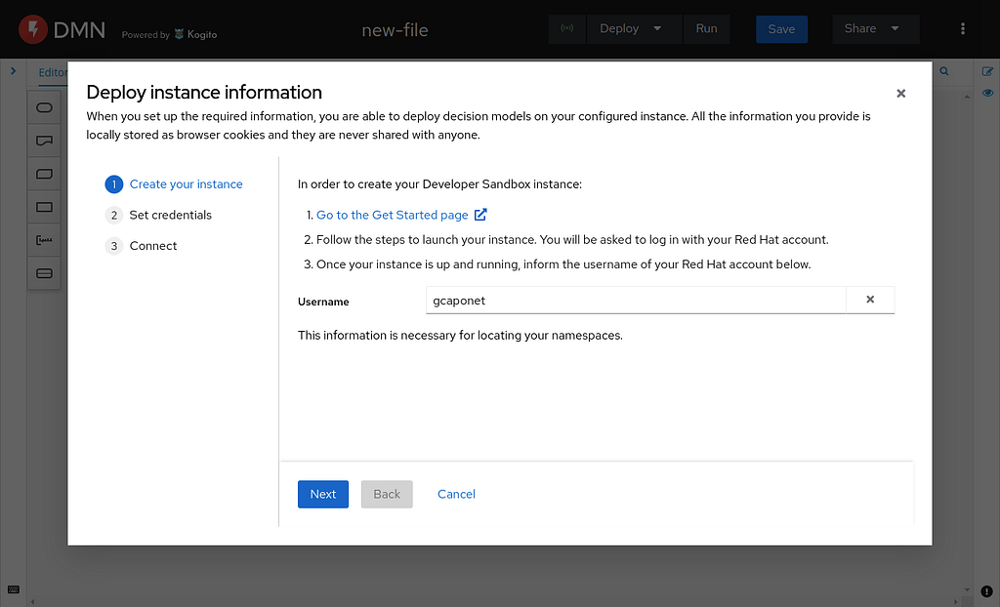
In the second step of the wizard, you need to provide some more information about your newly created instance. Following the instructions provided in the wizard, you will reach this page in your instance:
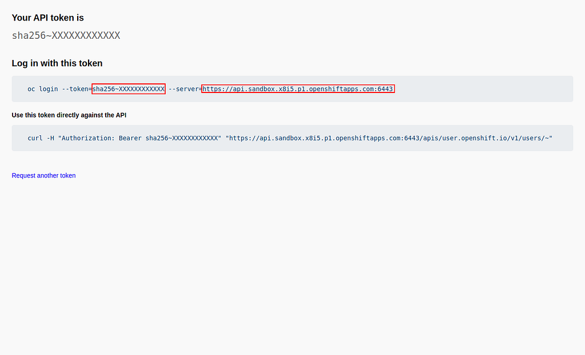
On this page, you need to copy the –server and –token information, and paste them in the second step of the wizard. This information is necessary for establishing a connection with your instance.
Note: Do not share your personal token with anyone.
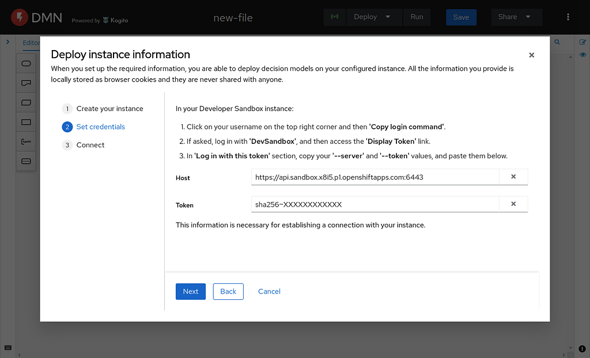
In the next and last step, you should see that your connection has been successfully established using the three pieces of information that you provided (username, host, and token).
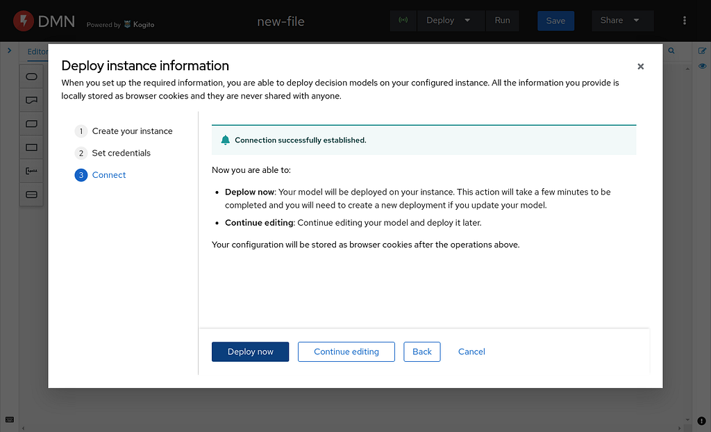
You can then Deploy now or Continue editing. Since our decision model is not ready yet, I will go with Continue editing.
Now that everything is set up, you are able to deploy your decision models and check the other deployments that you have done. You will also notice a blue bar at the bottom of the Deploy dropdown button, indicating that your instance is connected.
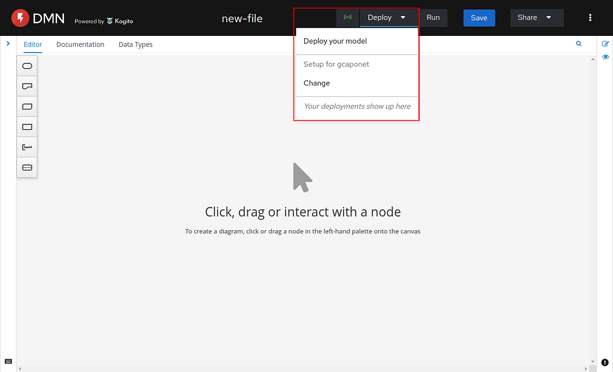
4-) Design your decision model
In this tutorial, I will be using the Traffic Violation decision model. The cool thing is that, while authoring my decision model, I can use the DMN Runner to be sure that everything is working as expected.
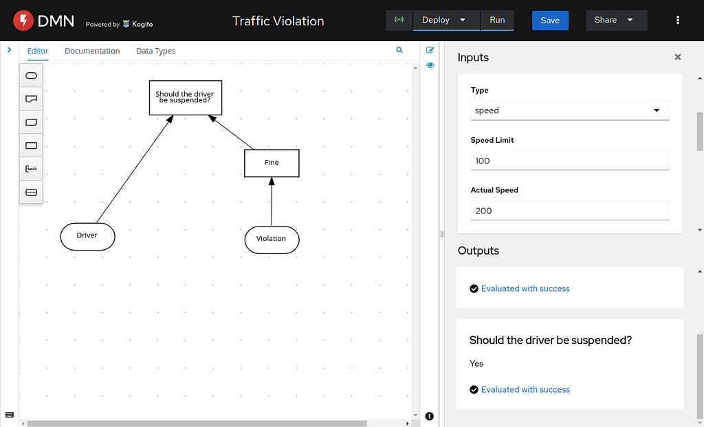
5-) Deploy your decision model
Once your decision model is ready, you can go ahead and deploy it. Keep in mind that each deployment takes a few minutes (usually) and it is immutable, i.e., you will need to trigger a new deployment if you make changes in your decision model.
Once done, you will find your deployment in your username-dev namespace.
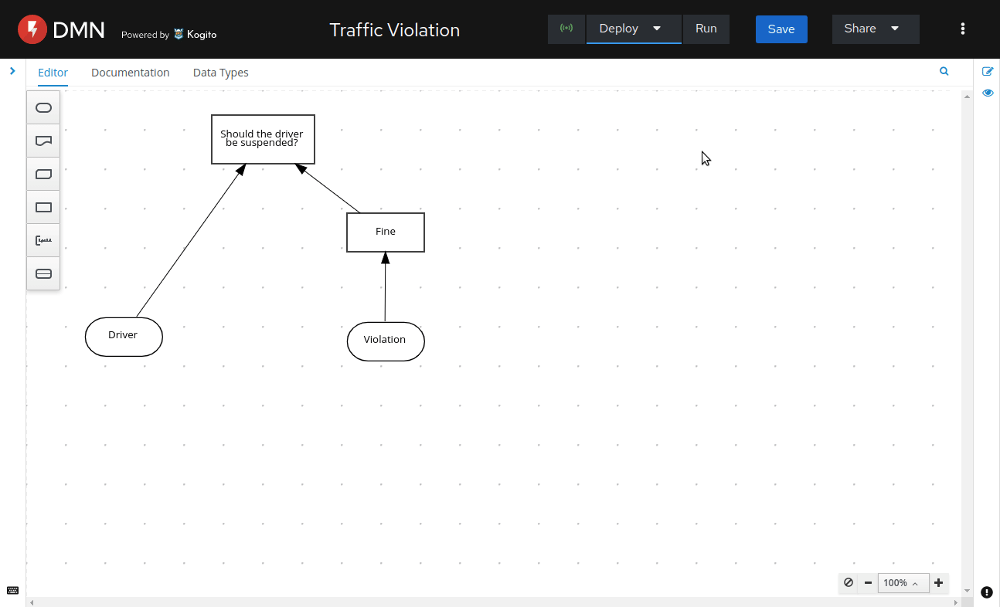
You will see a green indicator icon once your deployment is up and running.
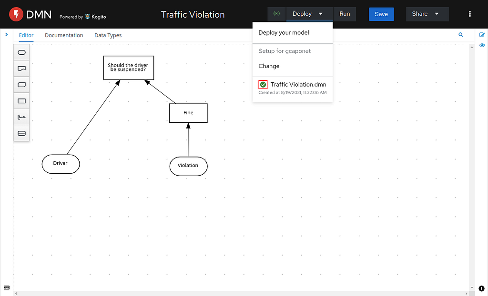
Note: The deployment will fail if your decision model contains errors.
6-) Check out your deployed decision model
Once your deployment is up and running, you can access it through the Deploy dropdown. When you do so, a new page will be open on your browser containing the form associated with your model for you to test and share the URL with others.
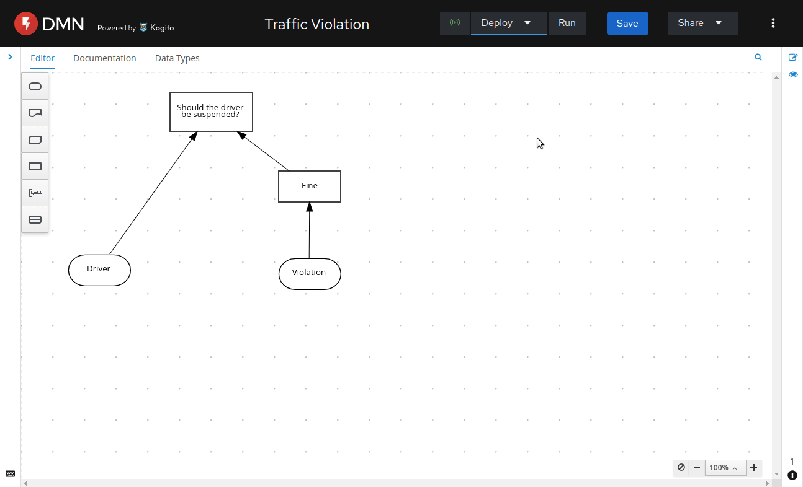
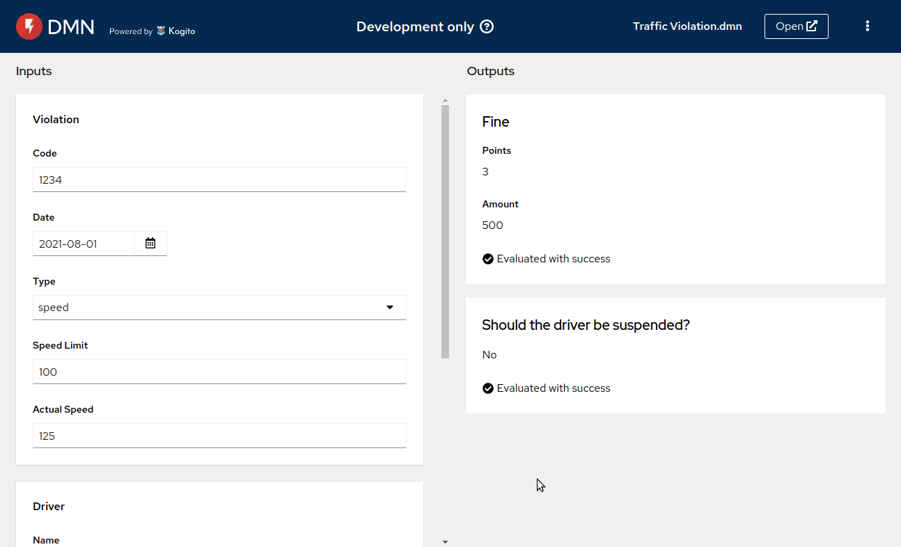
You can also access the Swagger UI associated with the deployed decision model and share the URL with others.
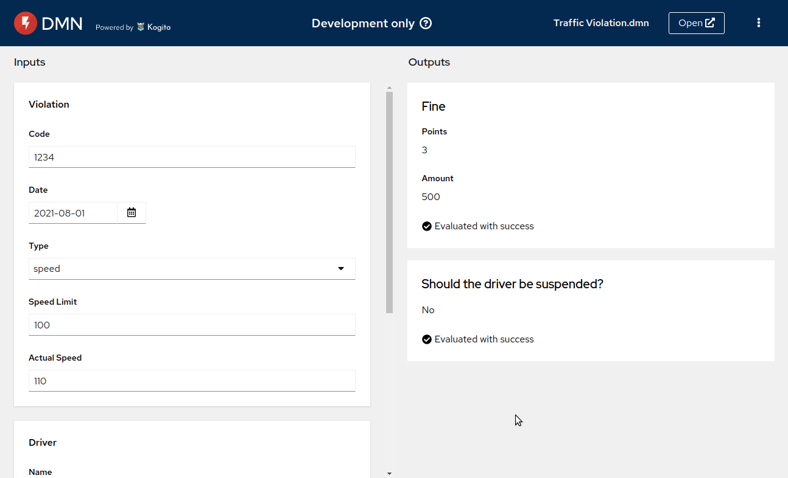
Lastly, you can even open your decision model on dmn.new and share the URL with others.
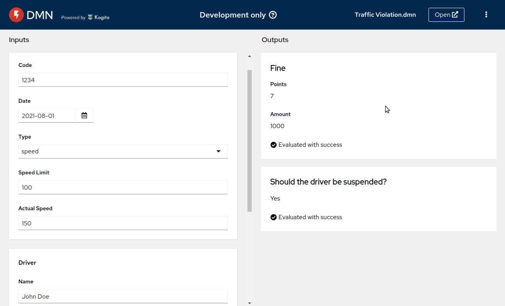
Some things to keep in mind
- Your Developer Sandbox for Red Hat OpenShift instance needs to be renewed every 30 days. It means that, after 30 days, all your data will be deleted.
- Tokens need to be renewed daily.
- Limit of 10 deployments.
- Deployments stay up for 8 hours but you can scale them up again when they go down.
I would like to recommend the KIE Live #40 if you want to see more details and a full end-to-end demonstration on how to use the DMN Developer Sandbox.
And that’s all for today. Thanks for reading! 😃